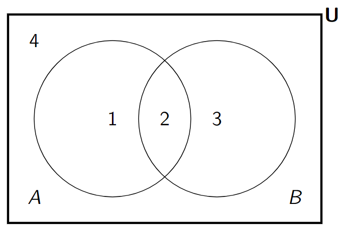
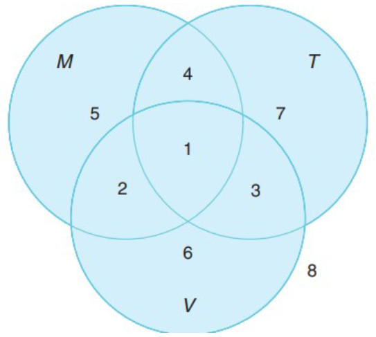

A set is a foundational concept in mathematics representing an unordered collection of distinct objects, known as its elements or members. The key characteristics of a set are:
Unordered: The order in which elements are listed does not matter. For example, the set \({1, 2, 3}\) is identical to \({3, 1, 2}\).
Distinct Elements: Each element in a set must be unique; duplicates are not counted. The collection \({a, a, b}\) is treated as the set \({a, b}\).
Sets can be described in two primary ways:
List Method: Elements are explicitly listed inside curly braces. For instance, \(A = {0, 2, 4, 6, 8}\) describes the set of even digits.
Rule Method (Set-Builder Notation): A rule or condition is specified that determines the elements of the set. For example, \(X = {x | x \% 2 = 0}\) defines the set of all even integers.
1.1.2 Set Equality and Membership
The Extension Principal states that two sets are considered equal if and only if they contain the exact same elements.
Membership defines the relationship between an element and a set.
The symbol \(∈\) signifies that an element is part of a set. For example, \(3 ∈ {1, 2, 3}\) means “3 is an element of the set {1, 2, 3}”.
The symbol \(∉\) signifies that an element is not part of a set. For example, \(4 ∉ {1, 2, 3}\).
1.2 Subsets and Special Sets
1.2.1 Subsets
A set \(A\) is a subset of a set \(B\) if every element of \(A\) is also an element of \(B\). This is denoted by \(A ⊆ B\).
A set \(A\) is a proper subset of \(B\), denoted \(A ⊂ B\), if \(A\) is a subset of \(B\) but is not equal to \(B\) (i.e., \(B\) contains at least one element not in \(A\)).
For example, if \(A = {a, b}\) and \(B = {a, b, c}\), then \(A ⊆ B\) and \(A ⊂ B\).
1.2.2 Universal and Empty Sets
The Universal Set (\(U\)) is a predefined set containing all possible elements relevant to a specific problem or context. All other sets in that context are subsets of \(U\).
The Empty Set (\(\emptyset\) or \({}\)) is the unique set that contains no elements. It is a subset of every set, including itself.
1.3 Basic Set Operations
1.3.1 Complement
The complement of a set \(A\), denoted \(Ā\), consists of all elements in the universal set \(U\) that are not in \(A\). It is defined as \(Ā = {x ∈ U | x ∉ A}\).
1.3.2 Intersection
The intersection of two sets \(A\) and \(B\), denoted \(A ∩ B\), is the set containing all elements that are members of both\(A\) and \(B\).
1.3.3 Union
The union of two sets \(A\) and \(B\), denoted \(A ∪ B\), is the set containing all elements that are in \(A\), or in \(B\), or in both.
1.3.4 Difference
The difference between two sets \(A\) and \(B\), denoted \(A \ B\), is the set of all elements that are in \(A\) but not in \(B\). It can also be expressed as \(A ∩ B̄\).
1.4 Properties of Set Operations
Set operations follow several important algebraic properties, which are analogous to the laws of logic:
Commutative Laws: \(A ∪ B = B ∪ A\) and \(A ∩ B = B ∩ A\).
Associative Laws: \((A ∪ B) ∪ C = A ∪ (B ∪ C)\) and \((A ∩ B) ∩ C = A ∩ (B ∩ C)\).
Distributive Laws: \(A ∪ (B ∩ C) = (A ∪ B) ∩ (A ∪ C)\) and \(A ∩ (B ∪ C) = (A ∩ B) ∪ (A ∩ C)\).
De Morgan’s Laws: These laws provide a way to find the complement of a union or intersection.
\((A ∪ B)̄ = Ā ∩ B̄\) (The complement of the union is the intersection of the complements).
\((A ∩ B)̄ = Ā ∪ B̄\) (The complement of the intersection is the union of the complements).
1.5 Cardinality
The cardinality of a set \(A\), denoted \(|A|\), is the number of distinct elements in the set.
For a finite set, the cardinality is a non-negative integer. For example, if \(A = {1, 2, 3}\), then \(|A| = 3\).
The cardinality of the empty set is 0: \(|∅| = 0\).
For infinite sets, cardinality describes the “size” of the infinity. Sets like the natural numbers (\(ℕ\)) are countably infinite, while sets like the real numbers (\(ℝ\)) are uncountably infinite.
1.6 Cartesian Product
The Cartesian Product of two sets \(A\) and \(B\), denoted \(A × B\), is the set of all possible ordered pairs\((a, b)\) where \(a\) is an element of \(A\) and \(b\) is an element of \(B\).
Not Commutative: In general, \(A × B ≠ B × A\) because the ordering within the pairs matters.
Cardinality: The cardinality of a Cartesian product is the product of the cardinalities of the individual sets: \(|A × B| = |A| * |B|\).
For example, if \(A = {1, 2}\) and \(B = {x, y}\), then \(A × B = {(1, x), (1, y), (2, x), (2, y)}\).
1.7 Power Set
The Power Set of a set \(A\), denoted \(P(A)\) or \(2^A\), is the set containing all possible subsets of \(A\), including the empty set and \(A\) itself.
Cardinality: If \(|A| = n\), then the cardinality of its power set is \(|P(A)| = 2^n\).
For example, if \(A = {a, b}\), its power set is \(P(A) = {∅, {a}, {b}, {a, b}}\).
1.8 Inclusion-Exclusion Principle
This principle is a counting technique used to find the number of elements in the union of multiple sets without double-counting.
For Two Sets: The cardinality of the union of \(A\) and \(B\) is the sum of their individual cardinalities minus the cardinality of their intersection. \[ |A ∪ B| = |A| + |B| - |A ∩ B| \]
For Three Sets: The principle extends to three sets by adding the sizes of the individual sets, subtracting the sizes of all pairwise intersections, and adding back the size of the three-way intersection. \[ |A ∪ B ∪ C| = |A| + |B| + |C| - |A ∩ B| - |A ∩ C| - |B ∩ C| + |A ∩ B ∩ C| \]
2. Definitions
Set: An unordered collection of distinct objects, called elements.
Element: A member of a set.
Subset (\(⊆\)): A set where all of its elements are also contained in another set.
Proper Subset (\(⊂\)): A subset that is not equal to the original set.
Universal Set (\(U\)): The set of all possible elements under consideration for a specific problem.
Empty Set (\(∅\)): The set with no elements.
Cardinality (\(|A|\)): The number of distinct elements in a set.
Complement (\(Ā\)): The set of elements in the universal set that are not in set A.
Intersection (\(∩\)): The set of elements common to two or more sets.
Union (\(∪\)): The set of all elements present in two or more sets.
Set Difference (\): The set of elements that are in one set but not another.
Cartesian Product (\(×\)): The set of all ordered pairs from two sets.
Power Set (\(P(A)\)): The set of all subsets of a set.
Venn Diagram: A visual representation of sets as overlapping circles within a universal set rectangle.
3. Formulas
Complement: \(\overline{A} = U \setminus A\)
Difference: \(A \setminus B = A \cap \overline{B}\)
De Morgan’s Law: \(\overline{(A \cup B)} = \overline{A} \cap \overline{B}\)
De Morgan’s Law: \(\overline{(A \cap B)} = \overline{A} \cup \overline{B}\)
Distributive Law: \(A \cap (B \cup C) = (A \cap B) \cup (A \cap C)\)
Cardinality of a Union (Two Sets): \(|A \cup B| = |A| + |B| - |A \cap B|\)
Cardinality of a Union (Three Sets): \[ |A \cup B \cup C| = |A| + |B| + |C| - |A \cap B| - |A \cap C| - |B \cap C| + |A \cap B \cap C| \]
Cardinality of a Set Difference: \(|A \setminus B| = |A| - |A \cap B|\)
Cardinality of a Cartesian Product: \(|A \times B| = |A| \cdot |B|\)
Intersection of Cartesian Products: \((A \times C) \cap (B \times D) = (A \cap B) \times (C \cap D)\)
Intersection of Power Sets: \(P(A) \cap P(B) = P(A \cap B)\)
4. Examples
4.1. Find the Complement of a Set (Tutorial 4, Example 1)
Let \(U = \{a, b, c, d, e\}\) and \(A = \{a, b, e\}\). List the elements of \(\overline{A}\).
Click to see the solution
Definition of Complement: The complement of a set A, denoted \(\overline{A}\), contains all the elements in the universal set U that are not in A.
Identify elements:
U = {a, b, c, d, e}
A = {a, b, e}
Find elements in U but not in A: The elements ‘c’ and ‘d’ are in U but not in A.
Answer:\(\overline{A} = \{c, d\}\).
4.2. Find the Complement of a Set (Tutorial 4, Example 2)
Let \(U = \{a, b, c, d, e\}\) and \(B = \{b, d, e\}\). List the elements of \(\overline{B}\).
Click to see the solution
Definition of Complement: The complement of a set B, denoted \(\overline{B}\), contains all the elements in the universal set U that are not in B.
Identify elements:
U = {a, b, c, d, e}
B = {b, d, e}
Find elements in U but not in B: The elements ‘a’ and ‘c’ are in U but not in B.
Answer:\(\overline{B} = \{a, c\}\).
4.3. Find the Intersection of Sets (Tutorial 4, Example 3)
Let \(A = \{a, b, e\}\) and \(B = \{b, d, e\}\). List the elements of \(A \cap B\).
Click to see the solution
Definition of Intersection: The intersection of two sets, \(A \cap B\), contains all the elements that are common to both set A and set B.
Identify common elements:
A = {a, b, e}
B = {b, d, e}
Compare the sets: The elements ‘b’ and ‘e’ appear in both sets.
Answer:\(A \cap B = \{b, e\}\).
4.4. Find the Union of Sets (Tutorial 4, Example 4)
Let \(A = \{a, b, e\}\) and \(B = \{b, d, e\}\). List the elements of \(A \cup B\).
Click to see the solution
Definition of Union: The union of two sets, \(A \cup B\), contains all the elements that are in set A, or in set B, or in both, without duplication.
Combine elements:
Elements from A: a, b, e
Elements from B: b, d, e
List unique elements: Combining them gives {a, b, e, d}.
Answer:\(A \cup B = \{a, b, d, e\}\).
4.5. Perform Set Operations (Tutorial 4, Example 6)
Let \(U = \{a, b, c, d, e\}\), \(A = \{a, b, e\}\), and \(B = \{b, d, e\}\). List the elements of \(\overline{A} \cap B\).
Click to see the solution
Find the complement of A (\(\overline{A}\)): First, find all elements in U that are not in A.
\(\overline{A} = U - A = \{c, d\}\).
Find the intersection: Now, find the common elements between the result from step 1 and set B.
\(\overline{A} = \{c, d\}\)
\(B = \{b, d, e\}\)
The common element is ‘d’.
Answer:\(\overline{A} \cap B = \{d\}\).
4.6. Construct Formula from Venn Diagram (Tutorial 4, Example 7)
Referring to the following Venn diagram, construct the formula (using only \(\overline{()}\), \(\cap\), \(\cup\)) represented by region 2.

Click to see the solution
Analyze Region 2: Region 2 represents the area where the circles for set A and set B overlap.
Define the region: This overlapping area is the definition of the intersection of the two sets.
Write the formula: The intersection of A and B is written as \(A \cap B\).
Answer: The formula is \(A \cap B\).
4.7. Construct Formula from Venn Diagram (Tutorial 4, Example 8)
Referring to the following Venn diagram, construct the formula (using only \(\overline{()}\), \(\cap\), \(\cup\)) represented by region 1.
Click to see the solution
Analyze Region 1: Region 1 is the part of set A that does not overlap with set B.
Define the region: This means we want elements that are in A AND are NOT in B.
Write the formula: “NOT in B” is the complement of B, or \(\overline{B}\). The condition “in A AND NOT in B” translates to the intersection of A and \(\overline{B}\).
Answer: The formula is \(A \cap \overline{B}\).
4.8. Construct Formula from Venn Diagram (Tutorial 4, Example 9)
Referring to the following Venn diagram, construct the formula (using only \(\overline{()}\), \(\cap\), \(\cup\)) represented by region 4.
Click to see the solution
Analyze Region 4: Region 4 is the area outside of both circles A and B, but inside the universal set U.
Define the region: This means we want elements that are NOT in A AND are NOT in B.
Write the formula: This translates to the intersection of the complements of A and B.
Alternative Formula: Region 4 is also the complement of the union of A and B.
Answer: The formula can be written as \(\overline{A} \cap \overline{B}\) or \(\overline{(A \cup B)}\).
4.9. Construct Formula from Venn Diagram (Tutorial 4, Example 10)
Referring to the following Venn diagram, construct the formula (using only \(\overline{()}\), \(\cap\), \(\cup\)) represented by regions 1, 2, and 4 together.
Click to see the solution
Identify the excluded region: The combined area includes everything except for region 3.
Define the excluded region: Region 3 represents the part of B that is not in A. The formula for region 3 is \(B \cap \overline{A}\).
Find the complement: The desired area is the complement of region 3.
Write the formula: The formula is \(\overline{(B \cap \overline{A})}\).
Simplify using De Morgan’s Law:\(\overline{(B \cap \overline{A})} = \overline{B} \cup \overline{(\overline{A})} = \overline{B} \cup A\). Let’s verify: A is regions {1, 2}, \(\overline{B}\) is regions {1, 4}. Their union is {1, 2, 4}.
Answer: The formula is \(A \cup \overline{B}\).
4.10. Construct Formula from Venn Diagram (Tutorial 4, Example 11)
Referring to the following Venn diagram, construct the formula (using only \(\overline{()}\), \(\cap\), \(\cup\)) represented by region 1.

Click to see the solution
Analyze Region 1: Region 1 is the central area where all three circles (M, T, and V) overlap.
Define the region: This area represents the elements that are common to all three sets.
Write the formula: This is the intersection of the three sets.
Answer: The formula is \(M \cap T \cap V\).
4.11. Find the Cartesian Product (Tutorial 4, Example 12)
Let \(A = \{a, b\}\) and \(B = \{0, 1\}\). List the elements of \(A \times B\).
Click to see the solution
Definition of Cartesian Product: The Cartesian product \(A \times B\) is the set of all ordered pairs (x, y) where x is an element of A and y is an element of B.
Form the pairs: Pair each element of A with each element of B.
4.12. Find the Cartesian Product (Tutorial 4, Example 13)
Let \(A = \{a, b\}\). List the elements of \(A \times A\).
Click to see the solution
Definition of Cartesian Product: The Cartesian product \(A \times A\) (also denoted \(A^2\)) is the set of all ordered pairs (x, y) where both x and y are elements of A.
Form the pairs: Pair each element of A with every element of A.
4.13. Prove a Property of Cartesian Products (Tutorial 4, Example 14)
Prove that \(\exists A (A^2 \neq A)\).
Click to see the solution
Goal: We need to find at least one example of a set A for which the Cartesian product \(A \times A\) is not equal to the set A itself.
Choose a simple set: Let \(A = \{1\}\).
Calculate \(A^2\):\(A^2 = A \times A = \{1\} \times \{1\} = \{(1, 1)\}\).
Compare A and \(A^2\):
\(A = \{1\}\)
\(A^2 = \{(1, 1)\}\)
Conclusion: The set A contains the number 1, while the set \(A^2\) contains the ordered pair (1, 1). These are different types of objects, so the sets are not equal.
Answer: Let \(A = \{1\}\). Then \(A^2 = \{(1, 1)\}\). Since \(1 \neq (1, 1)\), the sets are not equal, which proves the statement.
4.14. Prove a Property of Cartesian Products (Tutorial 4, Example 15)
Prove that \(\exists A, B (A \times B \neq B \times A)\).
Click to see the solution
Goal: We need to find an example of two sets A and B where the Cartesian product is not commutative.
Choose simple, different sets: Let \(A = \{1\}\) and \(B = \{2\}\).
Compare the results: The ordered pair (1, 2) is not the same as the ordered pair (2, 1). Therefore, the sets containing them are not equal.
Answer: Let \(A = \{1\}\) and \(B = \{2\}\). Then \(A \times B = \{(1, 2)\}\) and \(B \times A = \{(2, 1)\}\). Since \((1, 2) \neq (2, 1)\), the statement is proven.
4.15. Find the Cartesian Product of Three Sets (Tutorial 4, Example 17)
Let \(A = \{a, b\}\), \(B = \{x, y\}\), \(C = \{1, 2\}\). List the elements of \(A \times B \times C\) and count its cardinality.
Click to see the solution
Definition of Cartesian Product: The product \(A \times B \times C\) is the set of all ordered triples (i, j, k) where \(i \in A\), \(j \in B\), and \(k \in C\).
Form the triples: Systematically combine one element from each set.
Starting with ‘a’ from A and ‘x’ from B: (a, x, 1), (a, x, 2)
Starting with ‘a’ from A and ‘y’ from B: (a, y, 1), (a, y, 2)
Starting with ‘b’ from A and ‘x’ from B: (b, x, 1), (b, x, 2)
Starting with ‘b’ from A and ‘y’ from B: (b, y, 1), (b, y, 2)
List the set of triples: The full set is \(\{(a, x, 1), (a, x, 2), (a, y, 1), (a, y, 2), (b, x, 1), (b, x, 2), (b, y, 1), (b, y, 2)\}\).
Calculate Cardinality: The cardinality is \(|A| \times |B| \times |C| = 2 \times 2 \times 2 = 8\).
Answer: The set is \(\{(a, x, 1), (a, x, 2), (a, y, 1), (a, y, 2), (b, x, 1), (b, x, 2), (b, y, 1), (b, y, 2)\}\) and its cardinality is 8.
4.16. Find the Power Set (Tutorial 4, Example 18)
Let \(A = \{0\}\). List the elements of \(P(A)\).
Click to see the solution
Definition of Power Set: The power set of A, denoted P(A), is the set of all possible subsets of A.
Identify subsets:
The empty set is a subset of every set: \(\emptyset\).
The set A itself is a subset: \(\{0\}\).
List the set of subsets.
Answer:\(P(A) = \{\emptyset, \{0\}\}\).
4.17. Find the Power Set (Tutorial 4, Example 19)
Let \(A = \{x, y\}\). List the elements of \(P(A)\).
Click to see the solution
Definition of Power Set: The power set of A, denoted P(A), is the set of all subsets of A.
4.20. Find the Intersection of Power Sets (Tutorial 4, Example 22)
Let \(A = \{a, b\}\), \(B = \{b, c\}\). List the elements of \(P(A) \cap P(B)\).
Click to see the solution
Find the Power Set of A:
\(P(A) = \{\emptyset, \{a\}, \{b\}, \{a, b\}\}\).
Find the Power Set of B:
\(P(B) = \{\emptyset, \{b\}, \{c\}, \{b, c\}\}\).
Find the Intersection: The intersection contains all elements that are common to both power sets.
Comparing the two sets, the common elements are \(\emptyset\) and \(\{b\}\).
Note: The intersection of power sets is equal to the power set of the intersection: \(P(A) \cap P(B) = P(A \cap B)\). Here \(A \cap B = \{b\}\), and \(P(\{b\}) = \{\emptyset, \{b\}\}\).
Answer:\(P(A) \cap P(B) = \{\emptyset, \{b\}\}\).
4.21. Use the Principle of Inclusion-Exclusion (Tutorial 4, Example 23)
How many bitstrings of length 8 start with a bit 1 or end with 10?
Click to see the solution
Define the sets:
Let A be the set of 8-bit strings that start with 1.
Let B be the set of 8-bit strings that end with 10.
Use the Inclusion-Exclusion Principle: We want to find \(|A \cup B| = |A| + |B| - |A \cap B|\).
Calculate |A|: The string is 1 _ _ _ _ _ _ _. There are 7 positions that can be 0 or 1.
\(|A| = 2^7 = 128\).
Calculate |B|: The string is _ _ _ _ _ _ 1 0. There are 6 positions that can be 0 or 1.
\(|B| = 2^6 = 64\).
Calculate |A ∩ B|: This is the set of strings that start with 1 AND end with 10. The string is 1 _ _ _ _ _ 1 0. There are 5 positions that can be 0 or 1.
\(|A \cap B| = 2^5 = 32\).
Calculate the final result:
\(|A \cup B| = 128 + 64 - 32 = 160\).
Answer: There are 160 such bitstrings.
4.22. Use the Principle of Inclusion-Exclusion (Tutorial 4, Example 24)
In a group of 100 students: 45 play football (F), 35 play basketball (B), 30 play volleyball (V). 15 play F & B, 10 play F & V, 8 play B & V, and 5 play all three. Find:
The number of students who play at least one sport
The number of students who play exactly one sport
The number of students who do not play any sports
Click to see the solution
Part (a): At least one sport: We need to find \(|F \cup B \cup V|\).
Use the Principle of Inclusion-Exclusion for three sets:
4.32. Construct Formula from Venn Diagram (Lab 4, Exercise 2.a)
Referring to the Venn diagram, construct the formula for region 5.
Click to see the solution
Analyze Region 5: This region is inside set M, but outside of sets T and V.
Define the region: This means elements must be in M, AND NOT in T, AND NOT in V.
Write the formula: This corresponds to the intersection of M, the complement of T, and the complement of V.
Answer:\(M \cap \overline{T} \cap \overline{V}\).
4.33. Construct Formula from Venn Diagram (Lab 4, Exercise 2.b)
Referring to the Venn diagram, construct the formula for region 3.
Click to see the solution
Analyze Region 3: This region is in the intersection of T and V, but outside of M.
Define the region: Elements must be in T, AND in V, AND NOT in M.
Write the formula: This corresponds to the intersection of T, V, and the complement of M.
Answer:\(T \cap V \cap \overline{M}\).
4.34. Construct Formula from Venn Diagram (Lab 4, Exercise 2.c)
Referring to the Venn diagram, construct the formula for regions 1 and 2 together.
Click to see the solution
Analyze Regions 1 and 2: This combined area is the part of the intersection of M and V that is not necessarily in T.
Define the region: Region 1 is \(M \cap T \cap V\). Region 2 is \(M \cap V \cap \overline{T}\).
Combine the formulas: The union of these two regions is \((M \cap T \cap V) \cup (M \cap V \cap \overline{T})\).
Simplify: We can factor out the common part, \(M \cap V\). This gives $ (M V) (T ) $. Since \(T \cup \overline{T}\) is the universal set, the expression simplifies to \(M \cap V\).
Answer:\(M \cap V\).
4.35. Construct Formula from Venn Diagram (Lab 4, Exercise 2.d)
Referring to the Venn diagram, construct the formula for regions 4 and 7 together.
Click to see the solution
Analyze Regions 4 and 7: This combined area is the part of set T that is outside of set V.
Define the region: The elements must be in T AND NOT in V.
Write the formula: This is the intersection of T and the complement of V.
Answer:\(T \cap \overline{V}\).
4.36. Construct Formula from Venn Diagram (Lab 4, Exercise 2.e)
Referring to the Venn diagram, construct the formula for regions 3, 6, 7, and 8 together.
Click to see the solution
Analyze the regions: The combined area includes everything in T except region 4, everything in V except region 2, and the area outside all circles (region 8).
Identify the excluded area: The excluded regions are 1, 2, 4, 5. This is the entire set M, along with region 4.
Alternative approach: Let’s define the included area. It’s the union of T and V, but with region 1 and 2 removed. This is complex.
Simpler approach: The area is everything that is outside of the part of M that doesn’t intersect with T or V (region 5). No, that’s not right.
Let’s use complements: The area is the complement of regions {1, 2, 4, 5}. Regions {1, 2, 4, 5} is the set M united with region 4 (\(M \cup (T \cap \overline{M} \cap \overline{V})\)). This is also complex.
Let’s check the sets: The desired area is \(\{3, 6, 7, 8\}\). This is everything outside of set M, except for region 4. So it’s \(\overline{M}\) with region 4 added back. That’s \(\overline{M} \cup (T \cap \overline{V} \cap \overline{M})\). That simplifies to \(\overline{M}\). Let’s check: \(\overline{M}\) = {3, 6, 7, 8}. This is correct.
A survey showed 80% like chocolate (C) and 60% like vanilla (V). 50% like both. A claim states 40% like only chocolate. Show this is false.
Click to see the solution
Define the information:
\(|C| = 80\%\)
\(|V| = 60\%\)
\(|C \cap V| = 50\%\)
Calculate the percentage who like only chocolate: The number of people who like only chocolate is the total who like chocolate minus those who like both.
\(|C \text{ only}| = |C| - |C \cap V|\)
Substitute the values:
\(|C \text{ only}| = 80\% - 50\% = 30\%\).
Compare with the claim: The calculated value is 30%, but the claim is 40%.
Answer: The claim is false because the actual percentage of students who like only chocolate is 30%.
4.48. Analyze a Survey Claim (Lab 4, Exercise 6)
Survey: 60% play soccer (S), 50% basketball (B), 70% tennis (T). Intersections: |S∩B|=30%, |S∩T|=35%, |B∩T|=30%. A claim states |S∩B∩T|=20%. Show this is false.
Click to see the solution
Use the Inclusion-Exclusion Principle: The total number of people playing at least one sport, \(|S \cup B \cup T|\), cannot exceed 100%.
Analyze the result: The calculation gives a total of 105%.
Conclusion: It is impossible for 105% of students to play at least one sport. The total cannot be more than 100%.
Answer: The claim cannot be true because it leads to the conclusion that 105% of students play at least one sport, which is impossible.
4.49. Analyze Survey Data (Lab 4, Exercise 7)
Survey: Robotics (R) 40%, Coding (C) 50%, Data Science (DS) 30%. Intersections: |R∩C|=20%, |R∩DS|=15%, |C∩DS|=10%, |R∩C∩DS|=5%. Find how many students participate in Robotics or Coding, but not in Data Science.
Click to see the solution
Define the goal: We need to find the number of students in the set \((R \cup C) \setminus DS\).
Use the formula:\(|(R \cup C) \setminus DS| = |R \cup C| - |(R \cup C) \cap DS|\).